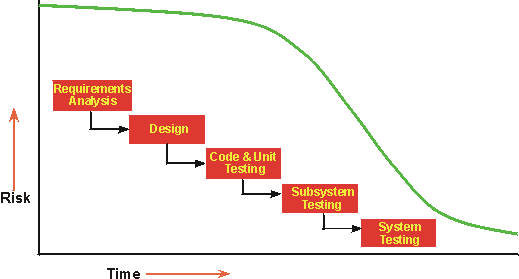
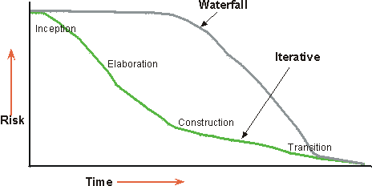

| Iterative Development |
 |
|
What is Iterative Development?A project using iterative development has a lifecycle consisting of several iterations. An iteration incorporates a loosely sequential set of tasks in business modeling, requirements, analysis and design, implementation, test, and deployment, in various proportions depending on where in the development cycle the iteration is located. Iterations in the inception and elaboration phases focus on management, requirements, and design activities; iterations in the construction phase focus on design, implementation, and test; and iterations in the transition phase focus on test and deployment. Iterations should be managed in a timeboxed fashion, that is, the schedule for an iteration should be regarded as fixed, and the scope of the iteration's content actively managed to meet that schedule. Why Develop Iteratively?An initial design is likely to be flawed with respect to its key requirements. Late discovery of design defects results in costly over-runs and, in some cases, even project cancellation. All projects have a set of risks involved. The earlier in the lifecycle you can verify that you've avoided a risk, the more accurate you can make your plans. Many risks are not even discovered until you've attempted to integrate the system. You will never be able to predict all risks regardless of how experienced the development team is.
 In a waterfall lifecycle, you can't verify whether you have stayed clear of a risk until late in the lifecycle.
 In an iterative lifecycle, you select what increment to develop in an iteration based on a list of key risks. Since the iteration produces a tested executable, you can verify whether you have mitigated the targeted risks or not. Benefits of an Iterative ApproachAn iterative approach is generally superior to a linear or waterfall approach for many different reasons.
A customer once said: "With the waterfall approach, everything looks fine until near the end of the project, sometimes up until the middle of integration. Then everything falls apart. With the iterative approach, it is very difficult to hide the truth for very long." Project managers often resist the iterative approach, seeing it as endless hacking. In the Rational Unified Process, the interactive approach is very controlled; iterations are planned in number, duration, and objective. The tasks and responsibilities of the participants are defined. Objective measures of progress are captured. Some rework does take place from one iteration to the next, but this, too, is carefully controlled. Mitigating risksAn iterative approach lets you mitigate risks earlier, because many risks are only addressed and discovered during integration. As you unroll the early iteration, you go through all disciplines, exercising many aspects of the project: tools, off-the-shelf software, people skills, and so on. Perceived risks may prove not to be risks, and new, unsuspected risks will show up. Integration is not one "big bang" at the end-elements are incorporated progressively. In reality, the iterative approach is an almost continuous integration. What used to be a long, uncertain, and difficult time-taking up to 40% of the total effort at the end of a project-and what was hard to plan accurately, is divided into six to nine smaller integrations that start with far fewer elements to integrate. Accommodating changesThe iterative approach lets you take into account changing requirements as they will normally change along the way. Changes in requirements and requirements "creep" have always been primary sources of trouble for a project, leading to late delivery, missed schedules, unsatisfied customers, and frustrated developers. Twenty-five years ago, Fred Brooks wrote: "Plan to throw one away, you will anyhow." Users will change their mind along the way. This is human nature. Forcing users to accept the system as they originally imagined it is wrong. They change their minds because the context is changing-they learn more about the environment and the technology, and they see intermediate demonstration of the product as it's being developed. An iterative lifecycle provides management with a way of making tactical changes to the product. For example, to compete with existing products, you may decide to release a reduced-functionality product earlier to counter a move by a competitor, or you may adopt another vendor for a given technology. Iteration also allows for technological changes along the way. If some technology changes or becomes a standard as new technology appears, the project can take advantage of it. This is particularly the case for platform changes and lower-level infrastructure changes. Reaching higher qualityAn iterative approach results in a more robust architecture because errors are corrected over several iterations. Early flaws are detected as the product matures during the early iterations. Performance bottlenecks are discovered and can be reduced, as opposed to being discovered on the eve of delivery. Developing iteratively, as opposed to running tests once toward the end of the project, results in a more thoroughly tested product. Critical functions have had many opportunities to be tested over several iterations, and the tests themselves, and any test software, have had time to mature. Learning and improvingDevelopers can learn along the way, and the various competencies and specialties are more fully employed during the whole lifecycle. Rather than waiting a long time just making plans and honing their skills, testers start testing early, technical writing starts early, and so on. The need for additional training or external help can be detected in the early iteration assessment reviews. The process itself can be improved and refined as it develops. The assessment at the end of an iteration not only looks at the status of the project from a product-schedule perspective, but also analyzes what needs to be changed in the organization and the process to perform better in the next iteration. Increasing reuseAn iterative lifecycle facilitates reuse. It's easier to identify common parts as they are partially designed or implemented, compared to having to identify all commonality up front. Identifying and developing reusable parts is difficult. Design reviews in early iterations allow software architects to identify unsuspected, potential reuse, and subsequent iterations allow them to further develop and mature this common code. Using an iterative approach makes it easier to take advantage of commercial-off-the-shelf products. You have several iterations to select them, integrate them, and validate that they fit with the architecture. |
© Copyright IBM Corp. 1987, 2006. All Rights Reserved. |